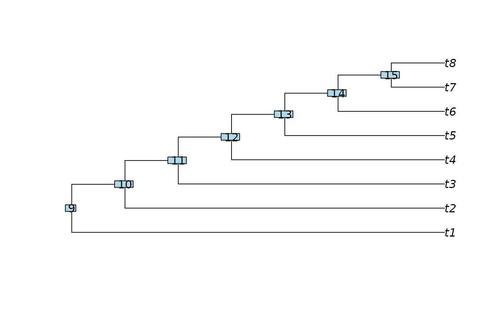
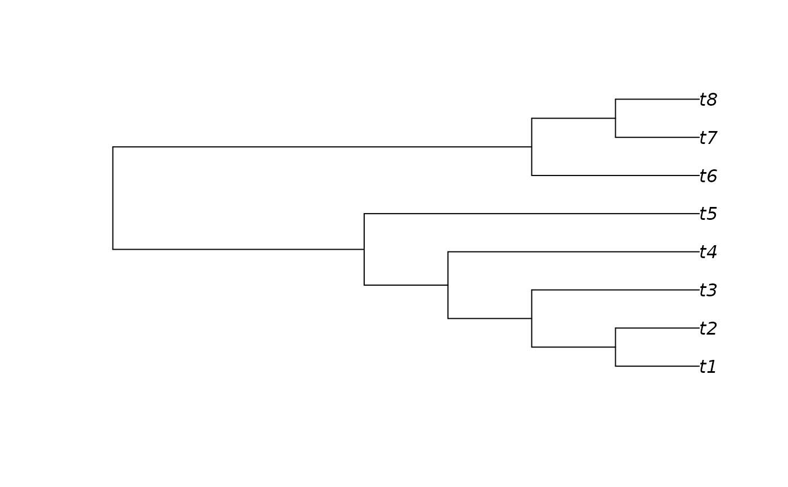
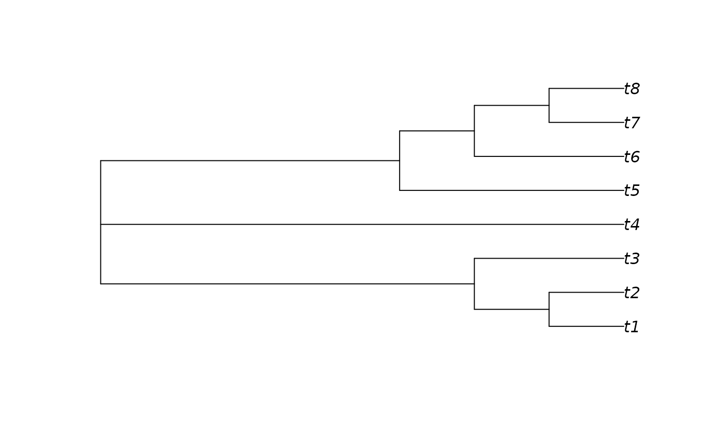
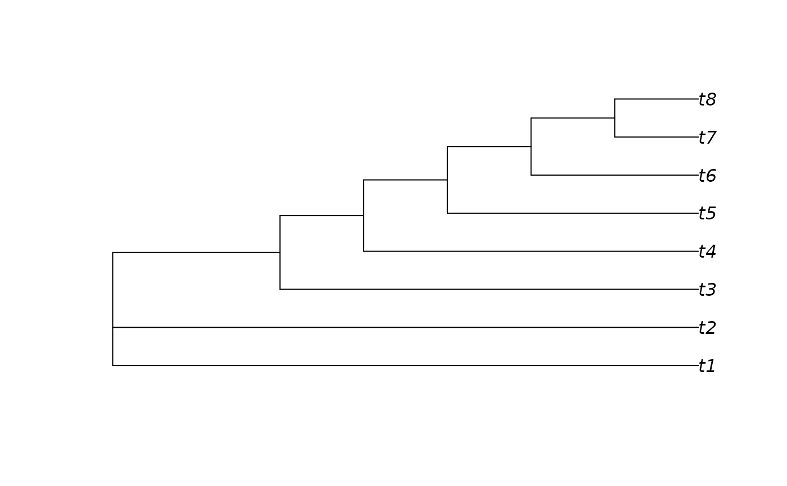

RootTree() roots a tree on the smallest clade containing the specified
tips;
RootOnNode() roots a tree on a specified internal node;
UnrootTree() collapses a root node, without the undefined behaviour
encountered when using ape::unroot() on trees in
preorder.
Arguments
- tree
A tree of class
phylo, or a list of trees of classlistormultiPhylo.- outgroupTips
Vector of type character, integer or logical, specifying the names or indices of the tips to include in the outgroup. If
outgroupTipsis a of type character, and a tree contains multiple tips with a matching label, the first will be used.- node
integer specifying node (internal or tip) to set as the root.
- resolveRoot
logical specifying whether to resolve the root node.
Value
RootTree() returns a tree of class phylo, rooted on the smallest
clade that contains the specified tips, with edges and nodes numbered in
preorder. Node labels are not retained.
RootOnNode() returns a tree of class phylo, rooted on the
requested node and ordered in Preorder.
UnrootTree() returns tree, in preorder,
having collapsed the first child of the root node in each tree.
See also
Other tree manipulation:
AddTip(),
CollapseNode(),
ConsensusWithout(),
DropTip(),
EnforceOutgroup(),
ImposeConstraint(),
KeptPaths(),
KeptVerts(),
LeafLabelInterchange(),
MakeTreeBinary(),
Renumber(),
RenumberTips(),
RenumberTree(),
SortTree(),
Subtree(),
TipTimedTree(),
TrivialTree
Examples
tree <- PectinateTree(8)
plot(tree)
ape::nodelabels()

plot(RootTree(tree, c("t6", "t7")))

plot(RootOnNode(tree, 12))

plot(RootOnNode(tree, 2))
